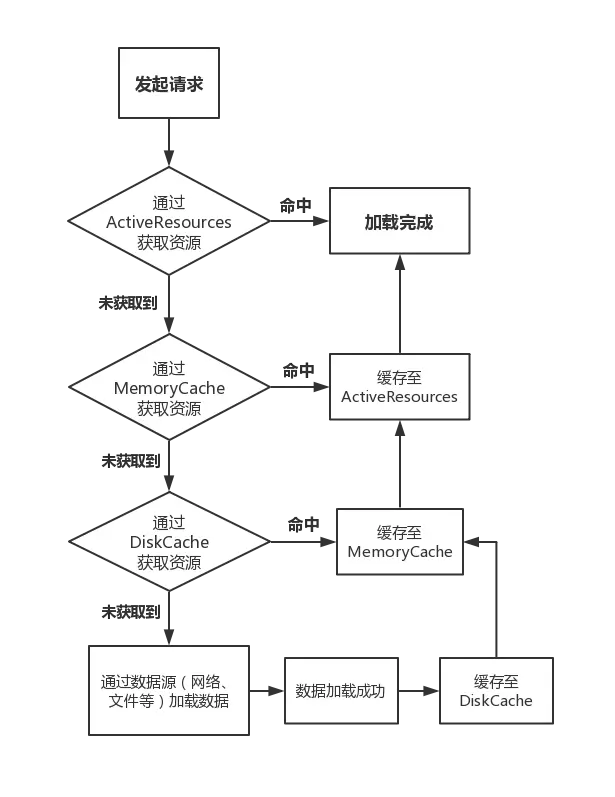

概述 Glide是一个快速高效的Android图片加载库，提供了易用的API，高性能、可扩展的图片解码管道（decode pipeline），以及自动的资源池技术。
Glide 支持拉取，解码和展示视频快照，图片，和GIF动画，开发者可以将 Glide 网络请求从 HttpUrlConnection 替换成如 Google Volley 和 Square OkHttp 这样的工具库。Glide 提供了多种图片格式的缓存，可以感知Activity/Fragment的生命周期。能够复用和主动回收Bitmap，以及带有高效的缓存策略，减小了内存的开销。
本文基于 Glide 4.11.0 版本，参考网上一些解析，结合源码对 Glide 的机制做一个分析。
使用 具体用法见Glide Github 。
基本用法 使用Glide加载图片非常简单：
1 Glide.with(fragment).load(myUrl).into(imageView);
取消加载同样很简单：
1 Glide.with(fragment).clear(imageView);
及时取消不必要的加载不是必须的操作，因为当 Glide.with() 中传入的 Activity 或 Fragment 实例销毁时，Glide 会自动取消加载并回收资源。
定制请求 Glide 提供了许多可应用于单一请求的选项，包括变换、过渡、缓存选项等。
1 2 3 4 RequestOptions sharedOptions = new RequestOptions().placeholder(placeholder).fitCenter(); Glide.with(fragment).load(myUrl).apply(sharedOptions).into(imageView1); Glide.with(fragment).load(myUrl).apply(sharedOptions).into(imageView2);
ListView/RecyclerView 在 ListView 或 RecyclerView 中加载图片的代码和在单独的 View 中加载完全一样。Glide 已经自动处理了 View 的复用和请求的取消：
1 2 3 4 5 @Override public void onBindViewHolder (ViewHolder holder, int position) String url = urls.get(position); Glide.with(fragment).load(url).into(holder.imageView); }
对 View 调用 clear() 或 into(view) 后在此之前的加载操作会被取消，并且在方法调用完成后，Glide 不会改变 view 的内容。如果忘记调用 clear()，而又没有开启新的加载操作，那么就会出现这种情况：已经为一个 view 设置好了一个 Drawable，但该 view 在之前的位置上使用 Glide 进行过加载图片的操作，Glide 加载完毕后可能会将这个 view 改回成原来的内容。
Target 可以将图片异步加载到自定义 Target 中：
1 2 3 4 5 6 7 8 9 Glide.with(context).load(url).into(new CustomTarget<Drawable>() { @Override public void onResourceReady (@NonNull Drawable resource, @Nullable Transition<? super Drawable> transition) } @Override public void onLoadCleared (@Nullable Drawable placeholder) } });
调用逻辑解析 先看两个接口：
1 2 3 4 5 6 7 8 9 10 11 12 13 14 15 16 17 18 19 20 21 22 23 24 25 26 public interface Target <R > extends LifecycleListener void onLoadStarted (@Nullable Drawable placeholder) void onLoadFailed (@Nullable Drawable errorDrawable) void onResourceReady (@NonNull R resource, @Nullable Transition<? super R> transition) void onLoadCleared (@Nullable Drawable placeholder) void getSize (@NonNull SizeReadyCallback cb) void removeCallback (@NonNull SizeReadyCallback cb) void setRequest (@Nullable Request request) Request getRequest () ; } public interface Request void begin () void clear () void pause () boolean isRunning () boolean isComplete () boolean isCleared () boolean isAnyResourceSet () boolean isEquivalentTo (Request other) }
with(context) 返回一个RequestManager对象，RequestManager是一个用于管理和启动对Glide的请求的类。可以感知activity, fragment等生命周期事件来自动停止，启动和重新启动请求。
1 2 3 4 5 6 7 8 9 10 11 12 13 14 15 16 17 18 19 20 21 22 23 24 public static RequestManager with (@NonNull Activity activity) return getRetriever(activity).get(activity); } private static RequestManagerRetriever getRetriever (@Nullable Context context) Preconditions.checkNotNull(context, "..." ); return Glide.get(context).getRequestManagerRetriever(); } public static Glide get (@NonNull Context context) if (glide == null ) { GeneratedAppGlideModule annotationGeneratedModule = getAnnotationGeneratedGlideModules(context.getApplicationContext()); synchronized (Glide.class) { if (glide == null ) { checkAndInitializeGlide(context, annotationGeneratedModule); } } } return glide; }
with方法的内容都是获取一个 RequestManager 对象并返回。这些with方法关键的不同在于传入的参数不一致，可以是Context、Activity、Fragment等等。Glide在加载图片的时候会绑定 with(context) 方法中传入的 context 的生命周期，这样避免消耗多余的资源，也避免了在Activity销毁之后加载图片从而导致的空指针问题。
RequestManagerRetriever.get 方法在后面生命周期解析的时候再看。
注意上面的 getAnnotationGeneratedGlideModules 方法，它用来处理开发者通过 @GlideModule 注解自定义的 AppGlideModule 类。在编译期间如果存在通过 @GlideModule 注解修饰的类，那么 Glide 会通过注解处理器生成一个继承自 GeneratedAppGlideModule 的类，里面有自定义的一些配置或者 ModelLoader 等，这样通过 Glide.get() 获取到的 Glide 实例便会自动应用这些配置。
load(url) 返回一个RequestBuilder对象，RequestBuilder类是一个处理通用资源类型的设置选项和启动负载的通用类。
1 2 3 4 5 6 7 8 9 10 11 12 public RequestBuilder<Drawable> load (@Nullable String string) return asDrawable().load(string); } public RequestBuilder<Drawable> asDrawable () return as(Drawable.class); } public <ResourceType> RequestBuilder<ResourceType> as (@NonNull Class<ResourceType> resourceClass) { return new RequestBuilder<>(glide, this , resourceClass, context); }
asDrawable() 调用返回了一个 RequestBuilder<Drawable> 对象，接下来看看 RequestBuilder.load 方法：
1 2 3 4 5 6 7 8 9 public RequestBuilder<TranscodeType> load (@Nullable String string) return loadGeneric(string); } private RequestBuilder<TranscodeType> loadGeneric (@Nullable Object model) this .model = model; isModelSet = true ; return this ; }
在调用load()后可以进行一些设置，调用的是 RequestBuilder 父类 BaseRequestOptions 中的方法。如下所示：
1 Glide.with(context).load(url).placeholder(R.drawable.place_image).error(R.drawable.error_image).into(imageView);
into(imageView) RequestBuilder.into Glide中的前两步是创建了一个 RequestBuilder, 这个Request可以理解为对图片加载的配置请求，而并没有去执行。在Glide的最后一步into方法中，这个请求才会真正执行。
1 2 3 4 5 6 7 8 9 10 11 12 13 14 15 16 17 18 19 20 21 22 23 24 25 26 27 28 29 30 public ViewTarget<ImageView, TranscodeType> into (@NonNull ImageView view) Util.assertMainThread(); Preconditions.checkNotNull(view); BaseRequestOptions<?> requestOptions = this ; if (!requestOptions.isTransformationSet() && requestOptions.isTransformationAllowed() && view.getScaleType() != null ) { switch (view.getScaleType()) { case CENTER_CROP: requestOptions = requestOptions.clone().optionalCenterCrop(); break ; case CENTER_INSIDE: requestOptions = requestOptions.clone().optionalCenterInside(); break ; case FIT_CENTER: case FIT_START: case FIT_END: requestOptions = requestOptions.clone().optionalFitCenter(); break ; case FIT_XY: requestOptions = requestOptions.clone().optionalCenterInside(); break ; case CENTER: case MATRIX: default : } } return into(glideContext.buildImageViewTarget(view, transcodeClass), null , requestOptions, Executors.mainThreadExecutor()); }
在处理了 scale type 后，该方法又调用了glideContext.buildImageViewTarget(view, transcodeClass)方法创建了一个 Target 对象，然后传递给了into方法。接下来看一看这个方法：
1 2 3 4 5 6 7 8 9 10 11 12 13 14 15 public <X> ViewTarget<ImageView, X> buildImageViewTarget (@NonNull ImageView imageView, @NonNull Class<X> transcodeClass) { return imageViewTargetFactory.buildTarget(imageView, transcodeClass); } public <Z> ViewTarget<ImageView, Z> buildTarget (@NonNull ImageView view, @NonNull Class<Z> clazz) { if (Bitmap.class.equals(clazz)) { return (ViewTarget<ImageView, Z>) new BitmapImageViewTarget(view); } else if (Drawable.class.isAssignableFrom(clazz)) { return (ViewTarget<ImageView, Z>) new DrawableImageViewTarget(view); } else { throw new IllegalArgumentException("Unhandled class: " + clazz + ", try .as*(Class).transcode(ResourceTranscoder)" ); } }
这个方法的的本质是：通过对图片来源类型的判断，创建并返回与图片来源对应的ImageViewTarget。接下来继续看into方法：
1 2 3 4 5 6 7 8 9 10 11 12 13 14 15 16 17 18 19 20 21 22 23 24 25 26 private <Y extends Target<TranscodeType>> Y into (@NonNull Y target, @Nullable RequestListener<TranscodeType> targetListener, BaseRequestOptions<?> options, Executor callbackExecutor) Preconditions.checkNotNull(target); if (!isModelSet) { throw new IllegalArgumentException("You must call #load() before calling #into()" ); } Request request = buildRequest(target, targetListener, options, callbackExecutor); Request previous = target.getRequest(); if (request.isEquivalentTo(previous) && !isSkipMemoryCacheWithCompletePreviousRequest(options, previous)) { if (!Preconditions.checkNotNull(previous).isRunning()) { previous.begin(); } return target; } requestManager.clear(target); target.setRequest(request); requestManager.track(target, request); return target; }
Glide处理 ListView 或者 Recyclerview 中的直接正常使用加载图片即可，因为 Glide 处理了复用，看一下Glide内部是如何处理的：
1 2 3 4 5 6 7 8 9 10 11 12 13 14 15 16 public Request getRequest () Object tag = getTag(); Request request = null ; if (tag != null ) { if (tag instanceof Request) { request = (Request) tag; } else { throw new IllegalArgumentException("You must not call setTag() on a view Glide is targeting" ); } } return request; } public void setRequest (@Nullable Request request) setTag(request); }
可以看到，target.getRequest() 和 target.setRequest(Request request) 本质上还是通过 setTag 和 getTag 来做的处理。
RequestManager.track 1 2 3 4 5 6 7 8 9 10 11 12 13 14 15 16 17 18 19 20 21 22 23 24 25 26 27 28 synchronized void track (@NonNull Target<?> target, @NonNull Request request) targetTracker.track(target); requestTracker.runRequest(request); } public final class TargetTracker implements LifecycleListener private final Set<Target<?>> targets = Collections.newSetFromMap(new WeakHashMap<Target<?>, Boolean>()); public void track (@NonNull Target<?> target) targets.add(target); } } public class RequestTracker private final Set<Request> requests = Collections.newSetFromMap(new WeakHashMap<Request, Boolean>()); private final List<Request> pendingRequests = new ArrayList<>(); public void runRequest (@NonNull Request request) requests.add(request); if (!isPaused) { request.begin(); } else { request.clear(); pendingRequests.add(request); } } }
上面 Request 是 SingleRequest 类型：
1 2 3 4 5 6 7 8 9 10 11 12 13 14 15 16 17 18 19 20 21 22 23 24 25 26 27 28 29 30 31 public void begin () synchronized (requestLock) { assertNotCallingCallbacks(); stateVerifier.throwIfRecycled(); if (model == null ) { onLoadFailed(new GlideException("Received null model" ), logLevel); return ; } if (status == Status.RUNNING) { throw new IllegalArgumentException("Cannot restart a running request" ); } if (status == Status.COMPLETE) { onResourceReady(resource, DataSource.MEMORY_CACHE); return ; } status = Status.WAITING_FOR_SIZE; if (Util.isValidDimensions(overrideWidth, overrideHeight)) { onSizeReady(overrideWidth, overrideHeight); } else { target.getSize(this ); } if ((status == Status.RUNNING || status == Status.WAITING_FOR_SIZE) && canNotifyStatusChanged()) { target.onLoadStarted(getPlaceholderDrawable()); } } }
方法的逻辑大致如下：
获取图片尺寸，如果长宽已经确定，则 onSizeReady(overrideWidth, overrideHeight)；如果未确定，先获取长宽，再 onSizeReady(overrideWidth, overrideHeight)
图片开始加载，首先提供占位图
主要的逻辑在 onSizeReady() 方法中：
1 2 3 4 5 6 7 8 9 10 11 12 13 14 15 16 17 18 19 20 public void onSizeReady (int width, int height) synchronized (requestLock) { if (status != Status.WAITING_FOR_SIZE) { return ; } status = Status.RUNNING; float sizeMultiplier = requestOptions.getSizeMultiplier(); this .width = maybeApplySizeMultiplier(width, sizeMultiplier); this .height = maybeApplySizeMultiplier(height, sizeMultiplier); loadStatus = engine.load(glideContext, model, requestOptions.getSignature(), this .width, this .height, requestOptions.getResourceClass(), transcodeClass, priority, requestOptions.getDiskCacheStrategy(), requestOptions.getTransformations(), requestOptions.isTransformationRequired(), requestOptions.isScaleOnlyOrNoTransform(), requestOptions.getOptions(), requestOptions.isMemoryCacheable(), requestOptions.getUseUnlimitedSourceGeneratorsPool(), requestOptions.getUseAnimationPool(), requestOptions.getOnlyRetrieveFromCache(), this , callbackExecutor); } }
Engine.load 1 2 3 4 5 6 7 8 9 10 11 12 13 14 15 16 17 18 19 20 21 22 23 24 public <R> LoadStatus load (GlideContext glideContext, Object model, Key signature, int width, int height, Class<?> resourceClass, Class<R> transcodeClass, Priority priority, DiskCacheStrategy diskCacheStrategy, Map<Class<?>, Transformation<?>> transformations, boolean isTransformationRequired, boolean isScaleOnlyOrNoTransform, Options options, boolean isMemoryCacheable, boolean useUnlimitedSourceExecutorPool, boolean useAnimationPool, boolean onlyRetrieveFromCache, ResourceCallback cb, Executor callbackExecutor) EngineKey key = keyFactory.buildKey(model, signature, width, height, transformations, resourceClass, transcodeClass, options); EngineResource<?> memoryResource; synchronized (this ) { memoryResource = loadFromMemory(key, isMemoryCacheable, startTime); if (memoryResource == null ) { return waitForExistingOrStartNewJob(glideContext, model, signature, width, height, resourceClass, transcodeClass, priority, diskCacheStrategy, transformations, isTransformationRequired, isScaleOnlyOrNoTransform, options, isMemoryCacheable, useUnlimitedSourceExecutorPool, useAnimationPool, onlyRetrieveFromCache, cb, callbackExecutor, key, startTime); } } cb.onResourceReady(memoryResource, DataSource.MEMORY_CACHE); return null ; }
首先尝试从内存中获取缓存，获取到了则直接返回使用，否则调用 waitForExistingOrStartNewJob 方法获取磁盘缓存或从数据源获取资源：
1 2 3 4 5 6 7 8 9 10 11 12 13 14 15 16 17 private <R> LoadStatus waitForExistingOrStartNewJob () { EngineJob<?> current = jobs.get(key, onlyRetrieveFromCache); if (current != null ) { current.addCallback(cb, callbackExecutor); return new LoadStatus(cb, current); } EngineJob<R> engineJob = engineJobFactory.build(key, isMemoryCacheable, useUnlimitedSourceExecutorPool, useAnimationPool, onlyRetrieveFromCache); DecodeJob<R> decodeJob = decodeJobFactory.build(glideContext, model, key, signature, width, height, resourceClass, transcodeClass, priority, diskCacheStrategy, transformations, isTransformationRequired, isScaleOnlyOrNoTransform, onlyRetrieveFromCache, options, engineJob); jobs.put(key, engineJob); engineJob.addCallback(cb, callbackExecutor); engineJob.start(decodeJob); return new LoadStatus(cb, engineJob); }
生命周期控制 Glide加载图片时，通过在所在的 Activity/Fragment 中添加一个空的 Fragment：RequestManagerFragment/SupportRequestManagerFragment，然后通过其生命周期的回调去控制Glide图片的加载动作。其代码如下：
1 2 3 4 5 6 7 8 9 10 11 12 13 14 15 16 17 18 19 20 21 22 23 24 25 26 27 28 29 30 31 32 33 34 35 36 public class RequestManagerFragment extends Fragment private final ActivityFragmentLifecycle lifecycle; @Nullable private RequestManager requestManager; public RequestManagerFragment () this (new ActivityFragmentLifecycle()); } RequestManagerFragment(@NonNull ActivityFragmentLifecycle lifecycle) { this .lifecycle = lifecycle; } ActivityFragmentLifecycle getGlideLifecycle () { return lifecycle; } @Override public void onStart () super .onStart(); lifecycle.onStart(); } @Override public void onStop () super .onStop(); lifecycle.onStop(); } @Override public void onDestroy () super .onDestroy(); lifecycle.onDestroy(); } }
可以看到，当 Fragment 回调生命周期时，会调用 ActivityFragmentLifecycle 中对应的方法，因此我们看看 ActivityFragmentLifecycle 中的逻辑：
1 2 3 4 5 6 7 8 9 10 11 12 13 14 15 16 17 18 19 20 21 22 23 24 25 26 27 28 29 30 31 32 33 34 35 36 37 38 39 40 41 42 43 44 class ActivityFragmentLifecycle implements Lifecycle private final Set<LifecycleListener> lifecycleListeners = Collections.newSetFromMap(new WeakHashMap<LifecycleListener, Boolean>()); private boolean isStarted; private boolean isDestroyed; @Override public void addListener (@NonNull LifecycleListener listener) lifecycleListeners.add(listener); if (isDestroyed) { listener.onDestroy(); } else if (isStarted) { listener.onStart(); } else { listener.onStop(); } } @Override public void removeListener (@NonNull LifecycleListener listener) lifecycleListeners.remove(listener); } void onStart () isStarted = true ; for (LifecycleListener lifecycleListener : Util.getSnapshot(lifecycleListeners)) { lifecycleListener.onStart(); } } void onStop () isStarted = false ; for (LifecycleListener lifecycleListener : Util.getSnapshot(lifecycleListeners)) { lifecycleListener.onStop(); } } void onDestroy () isDestroyed = true ; for (LifecycleListener lifecycleListener : Util.getSnapshot(lifecycleListeners)) { lifecycleListener.onDestroy(); } } }
再看看 LifecycleListener 监听是何时添加的：
1 2 3 4 5 6 7 8 9 RequestManager() { if (Util.isOnBackgroundThread()) { mainHandler.post(addSelfToLifecycle); } else { lifecycle.addListener(this ); } }
可知在 RequestManager 构造方法中，会将自己注册到 RequestManagerFragment 的生命周期监听中。而 RequestManager 实例的创建，从 Glide.with 方法中可知，会调用 RequestManagerRetriever.get 方法来获取一个 RequestManager 实例：
1 2 3 4 5 6 7 8 9 10 11 12 private final RequestManagerFactory factory;public RequestManager get (@NonNull Activity activity) if (Util.isOnBackgroundThread()) { return get(activity.getApplicationContext()); } else { assertNotDestroyed(activity); android.app.FragmentManager fm = activity.getFragmentManager(); return fragmentGet(activity, fm, null , isActivityVisible(activity)); } }
当 context 是 Application 时，创建的 RequestManager 如下：
1 2 3 4 5 6 7 8 9 10 11 12 13 14 15 16 17 18 19 20 21 22 23 24 25 26 27 28 29 public RequestManager get (@NonNull Context context) return getApplicationManager(context); } private RequestManager getApplicationManager (@NonNull Context context) if (applicationManager == null ) { synchronized (this ) { if (applicationManager == null ) { Glide glide = Glide.get(context.getApplicationContext()); applicationManager = factory.build(glide, new ApplicationLifecycle(), new EmptyRequestManagerTreeNode(), context.getApplicationContext()); } } } return applicationManager; } class ApplicationLifecycle implements Lifecycle @Override public void addListener (@NonNull LifecycleListener listener) listener.onStart(); } @Override public void removeListener (@NonNull LifecycleListener listener) } }
由上可知，当 Glide 传入的 Context 是 Application 时，RequestManager 中的 lifecycle 是 ApplicationLifecycle 实例，没有生命周期的感知功能。当 Context 是 activity 实例时，则会通过 fragmentGet 方法创建一个用来感知生命周期变化的 Fragment:
1 2 3 4 5 6 7 8 9 10 11 12 13 14 15 16 17 18 19 20 21 22 23 24 25 26 27 28 29 30 31 private RequestManager fragmentGet (@NonNull Context context, @NonNull android.app.FragmentManager fm, @Nullable android.app.Fragment parentHint, boolean isParentVisible) RequestManagerFragment current = getRequestManagerFragment(fm, parentHint, isParentVisible); RequestManager requestManager = current.getRequestManager(); if (requestManager == null ) { Glide glide = Glide.get(context); requestManager = factory.build(glide, current.getGlideLifecycle(), current.getRequestManagerTreeNode(), context); current.setRequestManager(requestManager); } return requestManager; } private RequestManagerFragment getRequestManagerFragment (@NonNull final android.app.FragmentManager fm, @Nullable android.app.Fragment parentHint, boolean isParentVisible) RequestManagerFragment current = (RequestManagerFragment) fm.findFragmentByTag(FRAGMENT_TAG); if (current == null ) { current = pendingRequestManagerFragments.get(fm); if (current == null ) { current = new RequestManagerFragment(); current.setParentFragmentHint(parentHint); if (isParentVisible) { current.getGlideLifecycle().onStart(); } pendingRequestManagerFragments.put(fm, current); fm.beginTransaction().add(current, FRAGMENT_TAG).commitAllowingStateLoss(); handler.obtainMessage(ID_REMOVE_FRAGMENT_MANAGER, fm).sendToTarget(); } } return current; }
至此，完成了Glide与Fragment生命周期的绑定。当 Fragment 中生命周期发生变化时，则会回调 RequestManager 中的方法：
1 2 3 4 5 6 7 8 9 10 11 12 13 14 15 16 17 18 19 20 21 22 23 24 25 26 @Override public synchronized void onStart () resumeRequests(); targetTracker.onStart(); } @Override public synchronized void onStop () pauseRequests(); targetTracker.onStop(); } @Override public synchronized void onDestroy () targetTracker.onDestroy(); for (Target<?> target : targetTracker.getAll()) { clear(target); } targetTracker.clear(); requestTracker.clearRequests(); lifecycle.removeListener(this ); lifecycle.removeListener(connectivityMonitor); mainHandler.removeCallbacks(addSelfToLifecycle); glide.unregisterRequestManager(this ); }
缓存 一般来说，Glide 存在着多级缓存：Active Resources(另一个 View 正在展示这张图片) -> Memory cache(LruCache) -> Disk cache(DiskLruCache) -> Network

自定义加载 Glide 自定义加载流程如下：
定义一个 Model 类用于包装需要加载的数据；
定义一个 Key 实现类，用于实现 Model 中的数据的签名用于区分缓存，可以直接让 Model 来实现 Key 中的接口；
定义一个 DataFetcher 的实现类，用于告诉 Glide 资源该如何加载，并把加载结果回调出去；
定义一个 ModelLoader 的实现类用于包装 DataFetcher；
定义一个 ModelLoaderFactory 的实现类用于生成 ModelLoader 实例；
将自定义加载配置到 AppGlideModule 中。
代码实例：
定义Model并实现Key接口
1 2 3 4 5 class MyModel val path: String) : Key { override fun updateDiskCacheKey (messageDigest: MessageDigest ) messageDigest.update(path.toByteArray()) } }
实现DataFetcher用来加载数据
1 2 3 4 5 6 7 8 9 10 11 12 13 14 15 16 17 18 19 20 21 22 23 24 25 26 27 28 29 30 31 32 33 34 35 class MyModelFetcher private val model: MyModel) : DataFetcher<InputStream> { private var inputStream: InputStream? = null private var isCancelled = false override fun loadData (priority: Priority , callback: DataFetcher .DataCallback <in InputStream >) try { if (!isCancelled) { inputStream = FileInputStream(model.path) } callback.onDataReady(inputStream) } catch (e: Exception) { callback.onLoadFailed(e) } } override fun cleanup () try { inputStream?.close() } catch (e: IOException) { e.printStackTrace() } } override fun cancel () isCancelled = true } override fun getDataClass () return InputStream::class .java } override fun getDataSource () return DataSource.LOCAL } }
定义ModelLoader和ModelLoaderFactory
1 2 3 4 5 6 7 8 9 10 11 12 13 14 15 16 class MyModelLoader : ModelLoader <MyModel, InputStream > override fun buildLoadData (model: MyModel , width: Int , height: Int , options: Options ) return ModelLoader.LoadData(model, MyModelFetcher(model)) } override fun handles (model: MyModel ) Boolean = true class MyLoaderFactory : ModelLoaderFactory <MyModel, InputStream > override fun build (multiFactory: MultiModelLoaderFactory ) return MyModelLoader() } override fun teardown () } } }
定义AppGlideModule
1 2 3 4 5 6 7 @GlideModule class MyGlideModule : AppGlideModule override fun registerComponents (context: Context , glide: Glide , registry: Registry ) super .registerComponents(context, glide, registry) registry.append(MyModel::class .java, InputStream::class .java, MyModelLoader.MyLoaderFactory()) } }
总结 Glide加载图片的流程：
开发一个图片加载框架必要的需求：
异步加载：最少两个线程池(读磁盘/网络请求)
切换到主线程：Handler
缓存：LruCache、DiskLruCache
防止OOM：软引用，弱引用，LruCache，Bitmap像素存储位置等
内存泄露：生命周期管理
列表滑动加载的问题：RecycleView加载图片错乱可以设置Tag(url)
参考: https://juejin.im/post/6844903986412126216